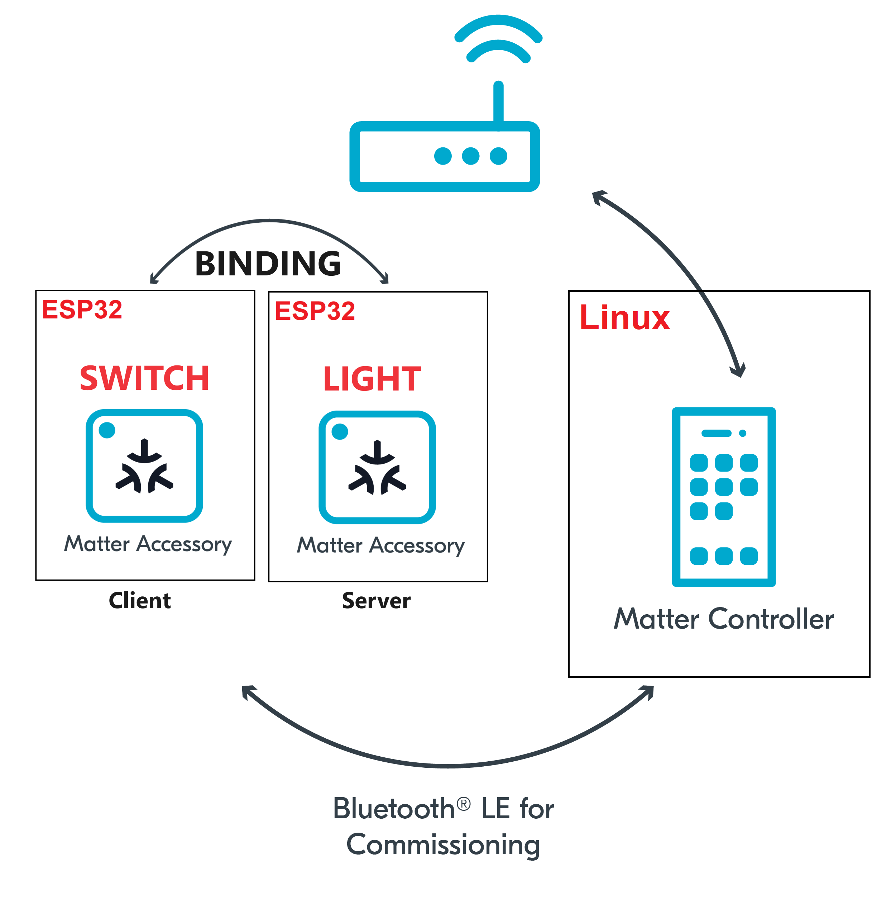

In this codelab we will show you how to bind a Matter switch to a Matter sample light app on the ESP32.
In this codelab, you will:

In this CodeLab we will run a Matter Switch on a ESP32 microcontroller, a Matter Light on another ESP32 and the Matter Controller on a Linux Host. This will allow us to create a simple Matter Network very quickly and we will learn how to bind a Matter switch to a Matter light.
This set of Codelabs will use Ubuntu 22.04 on a Amd64 based architecture.
You will need
Ubuntu 22.04 with a Bluetooth interfaceThe total codelab will take approximately a Duration of 30 minuates to complete.
You should have built the Matter switch in a previous codelab.
cd esp-idf
source ./export.sh
cd ..
cd esp-matter
source ./export.sh
cd examples/light_switch/
idf.py -p /dev/ttyUSB0 erase_flash
idf.py -p /dev/ttyUSB0 flash monitor
In this section we will pair our ESP32 matter switch application on the ESP32 using the chip-tool that acts as a matter controller.
Firstly we will check if the CHIP Tool runs correctly. Execute the following command in the connectedhomeip directory:
./out/host/chip-tool
As a result, the CHIP Tool will print all available commands. These are called clusters in this context, but not all listed commands correspond to the clusters in the Data Model (for example, pairing or discover commands).
./out/host/chip-tool pairing ble-wifi 4 ${SSID} ${PASSWORD} 20202021 3840
If everything is working you should see output logs and you should see that the commissioning was successful
[1683309736.149316][15:17] CHIP:CTL: Successfully finished commissioning step 'Cleanup'
[1683309736.149405][15:17] CHIP:TOO: Device commissioning completed with success
Note: If you run into problems using the chip-tool with BLE on Mac, please follow the directions on the Matter SDK repo documentation here. In particular, you have to have the Bluetooth Central Matter Client Developer mode profile installed.
In the same shell window, we will read the vendor-name of the Matter accessory using the following command:
./out/host/chip-tool basicinformation read vendor-name 4 0
In the output logs, you should see that the Vendor Name
[1682445848.220725][5128:5130] CHIP:TOO: VendorName: TEST_VENDOR
You should have coded and built the Matter light in a previous codelab.
cd ~/Projects/starter-esp-matter-app/
idf.py -p /dev/ttyUSB1 erase_flash
idf.py -p /dev/ttyUSB1 flash monitor
In this section we will pair our ESP32 matter light application on the ESP32 using the chip-tool that acts as a matter controller.
Firstly we will check if the CHIP Tool runs correctly. Execute the following command in the connectedhomeip directory:
./out/host/chip-tool
As a result, the CHIP Tool will print all available commands. These are called clusters in this context, but not all listed commands correspond to the clusters in the Data Model (for example, pairing or discover commands).
./out/host/chip-tool pairing ble-wifi 1 ${SSID} ${PASSWORD} 20202021 3840
If everything is working you should see output logs and you should see that the commissioning was successful
[1683309736.149316][15:17] CHIP:CTL: Successfully finished commissioning step 'Cleanup'
[1683309736.149405][15:17] CHIP:TOO: Device commissioning completed with success
In the same shell window, we will read the vendor-name of the Matter accessory using the following command:
./out/host/chip-tool basicinformation read vendor-name 1 0
In the output logs, you should see that the Vendor Name
[1682445848.220725][5128:5130] CHIP:TOO: VendorName: TEST_VENDOR
After commissioning, the next step is to bind Matter device (Light) with the Matter switch and control them via the Boot button on the Matter Switch.
Utilizing chip-tool to write access control to the Matter light device in order to control through the Matter Switch.
For Light:
./chip-tool accesscontrol write acl '[{"fabricIndex": 1, "privilege": 5, "authMode": 2, "subjects": [ 112233, 4 ], "targets": null}]' 1 0x0
An explanation of the parameters used in this command is below:
The privileges are:
The authentication modes are:
The Subjects is a list containing zero, one, or more subject identifiers, which are:
Targets: We could select a particular cluster that this access control list entry applies to such as {cluster:onoff}, {endpoint:1}, {cluster:levelcontrol,endpoint:2} or leave it at Null.
Our command is allowing the chip-tool (node id 112233) and the Matter Switch (node id 4) to Administer the light using CASE (certificate Authenticated Session Establishment). Since we have specified no targets, this ACL will apply to all clusters on the Matter Light.
To update the Matter Switch binding attribute and add an entry for a remote device (Matter Light) to the binding table, use the following command:
For Light:
./chip-tool binding write binding '[{"fabricIndex": 1, "node":1, "endpoint":1, "cluster":6}]' 4 0x1
This particular command has bound the Switch to the NodeId 1 (Matter Light) on endpoint 1 and cluster 6 (onOff cluster).
We can now control the Matter light using the Matter switch which is entirely independent of the chip-tool.
./chip-tool onoff read on-off 1 0x1
You should stop the switch-app process by using Ctrl-] in the first esp32 monitor window, the light-app process by using Ctrl-] in the second esp32 monitor window and then run idf erase flash.
It also a great habit to clean up the temporary files after you finish testing by using this command:
rm -fr /tmp/chip_*
Note: removing the /tmp/chip* files can sometimes clear up unexpected behaviours.
Checkout the official documentation [Espressif Matter SDK documentation here: ] (https://docs.espressif.com/projects/esp-matter/en/latest/esp32/)
Also check out the Project CHIP Matter SDK repo Project Chip - ConnectedHomeIp